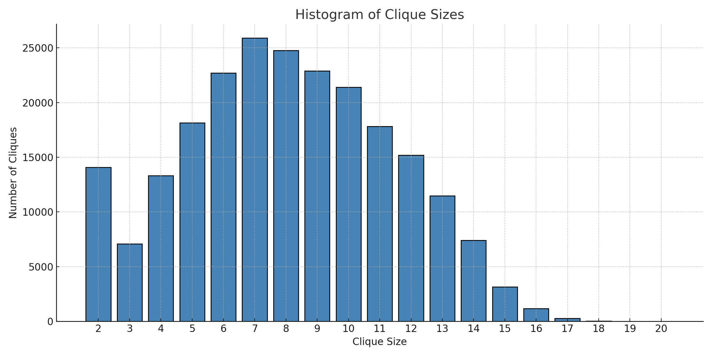
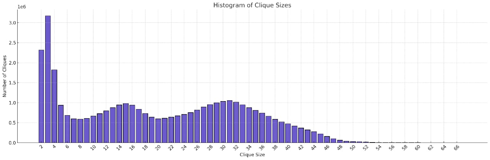
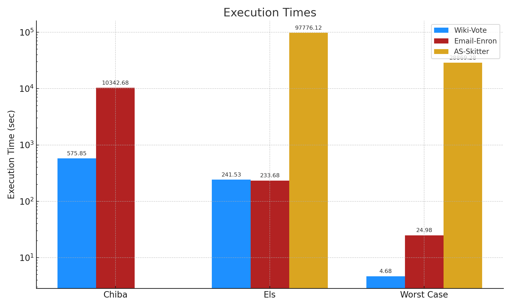

DAA Assignment - Group Project
Group No: 20
Group Members
- Priyansh Agarwal (2022A7PS1293H)
- Harsh Jawajiwar (2021B5A72358H)
- Ansh Kalucha (2022A7PS1799H)
- Sarthak Somani (2021B1A70793H)
- Ujjwal Mishra (2021B1A72479H)
Wiki-Vote Network

| Total number of maximal cliques: | 459002 |
|---|---|
| Largest Clique size: | 17 |
| Time taken by ELS: | 241.533 s |
| Time taken by Worst-Case: | 4.68sec |
| Time taken by Chiba: | 575.85sec |
Clique Size Distribution:
Sizes 2 to 17 — refer to histogram above for visual distribution.Email-Enron Network

| Total number of maximal cliques: | 226859 |
|---|---|
| Largest Clique size: | 20 |
| Time taken by ELS: | 233.68sec |
| Time taken by Worst-Case: | 24.98 sec |
| Time taken by Chiba: | 10342.68 sec |
Clique Size Distribution:
Sizes 2 to 20 — refer to histogram above for visual distribution.as-Skitter Network

| Total number of maximal cliques: | 37322355 |
|---|---|
| Largest Clique size: | 67 |
| Time taken by ELS: | 97776.12 sec |
| Time taken by Worst-Case: | 28869.28 sec |
| Time taken by Chiba: | Not recorded |
Clique Size Distribution:
Sizes 2 to 67 — refer to histogram above for visual distribution.Time distribution

Conclusion
The Chiba implementation is a straightforward implementation of the Bron-Kerbosch algorithm without any optimizations. It is suitable for small graphs or sparse graphs but may struggle with dense graphs.
The ELS and Worst-Case implementations use the Tomita algorithm with pivot selection, making them more efficient for dense graphs. They are better suited for real-world applications where the graph may be large and dense.
All three implementations provide detailed output, making them useful for both theoretical analysis and practical applications. However, the ELS and Worst-Case implementations are generally preferred due to their pivot-based optimizations.